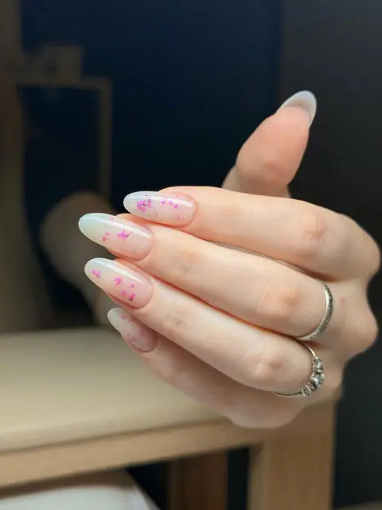
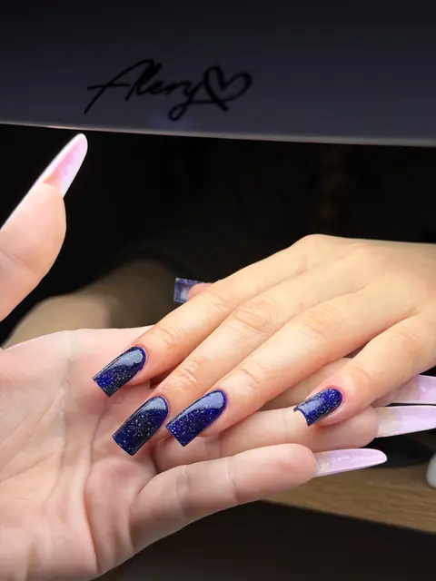
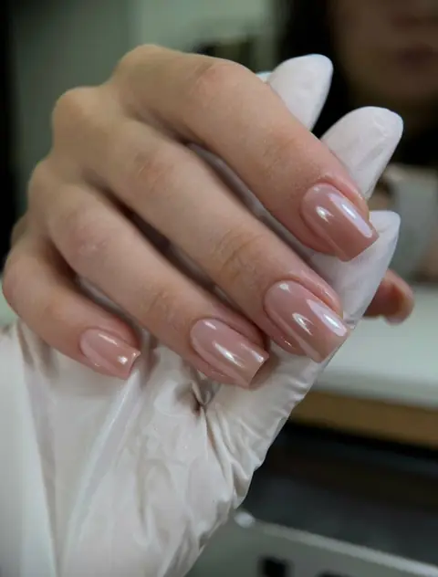
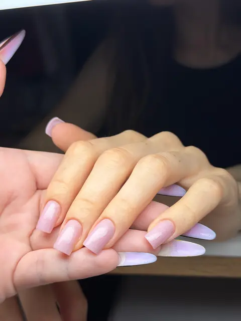
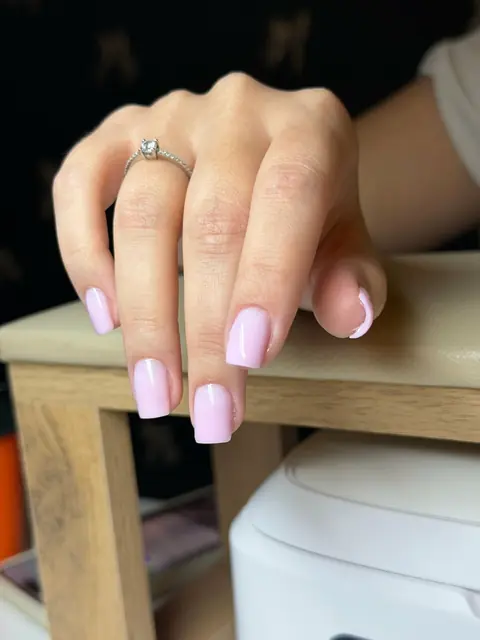
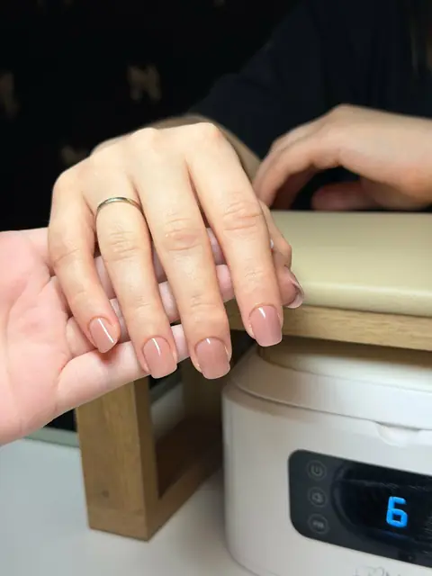
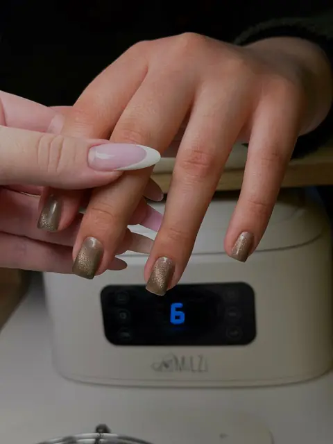
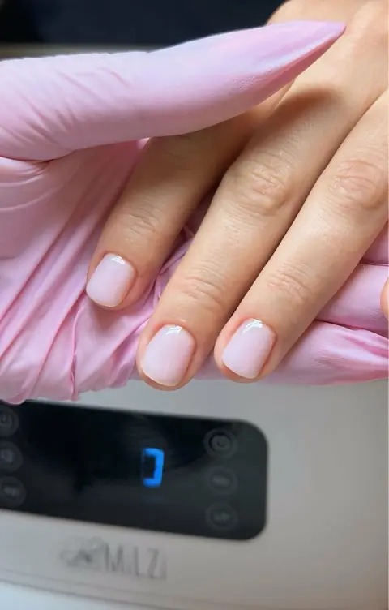

Аккуратный маникюр у Кати

О мастере
Кабинет маникюра в центре Екатеринбурга. Помогу подобрать форму и покрытие под ваши ногти – аккуратно, спокойно и с любовью к деталям.
Услуги
- Маникюр без покрытия1300 ₽
- Маникюр с покрытием2000 ₽
- Наращивание2500 ₽
- Ремонт ногтя300 ₽
Екатеринбург, пр. Ленина 38А, каб. 416 м. Площадь 1905 года, 940 м
О мастере
Меня зовут Катя, я мастер маникюра. Когда-то это было детское увлечение, а сейчас – дело, в котором я на своём месте и каждый день с удовольствием творю в своём кабинете.
Для меня маникюр – это больше, чем красивое покрытие. Мне важно, чтобы ногти радовали вас не только в день процедуры, но и спустя время: были крепкими, аккуратными и удобными каждый день. Поэтому я внимательно отношусь к подготовке ногтей, учитываю их особенности и подбираю технику под каждую клиентку.
Как проходит визит
Мой кабинет – небольшое уютное пространство, где можно выдохнуть. Пока я работаю, можно включить свой сериал, а к нему – вода или сок на выбор и конфетки. Время проходит незаметно, а уходите вы с ногтями, которыми хочется любоваться.
Мои работы
Здесь собраны мои работы – короткие и длинные, квадрат и миндаль, нежные оттенки и яркие акценты. Если что-то понравилось, покажите фото на записи – подберём похожее под ваши ногти.


















Отзывы
была впервые, атмосфера располагающая. маникюр качественный , красивый и полностью соответствует ожиданиям. Екатерина- замечательный мастер, с ней приятно и комфортно находиться, она все делает аккуратно и внимательно относится к пожеланиям😳
Маникюр — огонь 🔥Идеальная форма, аккуратная кутикула, а еще приятная атмосфера под просмотр турецкого сериала. Цвет и дизайн — любовь с первого взгляда. Спасибо мастеру! Рекомендую 💅
Очень аккуратно, быстро, приятная атмосфера🥰 Рекомендую обязательно
Все очень понравилось, отличная работа, очень милая студия, мастер предложила воду или сок на выбор, а также конфетки. Индивидуальный подход, очень чувствуется что мастер старается сделать так, чтобы точно все понравилось. Рекомендую!☺️
Что я делаю
Маникюр, покрытие гель-лаком и наращивание – от лаконичного nude до дизайна, который захочется разглядывать. Вместе подберём форму, длину и цвет, а если хочется сохранить свои ногти и отрастить длину, подскажу, как к этому прийти.
Аккуратные ногти, которые держатся 4 недели, – то, к чему я стремлюсь в каждой работе.
Маникюр без покрытия
1300 ₽
1 ч
Маникюр с покрытием
2000 ₽
2 ч
Наращивание
2500 ₽
3 ч
Ремонт ногтя
300 ₽
1 ч
Запись
Буду рада познакомиться! Выберите удобное окошко онлайн или напишите мне – подберём время вместе.
Записаться онлайнПозвонитьНаписать в Telegram
Как добраться
Проспект Ленина, 940 м от м. Площадь 1905 года. Кабинет на 4 этаже, в «Ленин-офисе».
- Адрес
- Екатеринбург, пр. Ленина 38А, каб. 416, 4 этаж
- Часы
- Ежедневно 09:00–20:00
- Телефон
- +7 (982) 717-93-71
пр. Ленина 38А, каб. 416
Показать карту